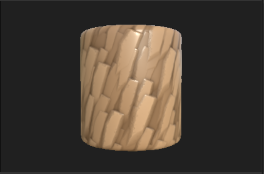
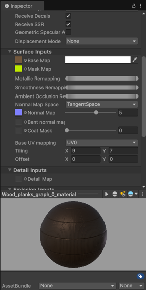
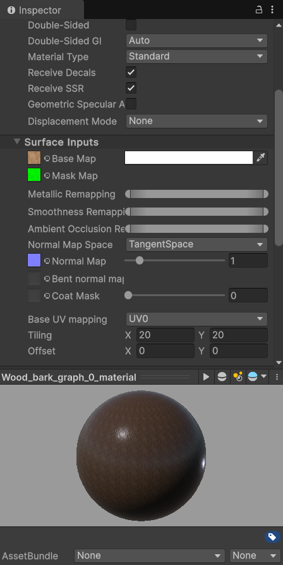
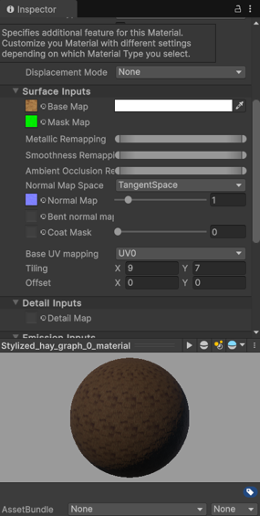

Procedural Art
About:
In this project, I have gained theoretical and practical knowledge about different means of generating procedural content. I have created a system that makes creating iterations faster and easier and thus lowers the overall amount of production time. My delivered product is a procedurally crafted and reimagined small-scope city area produced by using suitable tools and workflows, presented in the game engine Unity.
Created by:

Programs:
Made in Unreal Engine, Autodesk Maya and Substance 3D Designer
Videos:
Renders and Unity:
Research:
Derived from the sample image, the Morthal theme is based on a village in the North West and consists of various kinds of meshes and textures. The climate is very cold and snowy, so the Morthal theme uses houses, roads, and potentially pine trees, rocks, and water as basic building blocks. The landscape has grass, hay or straw, sand, water, and mountains. It is quite swampy with water next to the village and the roads seem to be made with sand.For the houses, I need log and straw textures. The materials can look a little worn due to weather conditions and the age of the buildings. For the roads, I need snow and sand textures. For the pine trees, I need log and leaf textures. Lastly, for the rocks, I need stone textures and for the water, I need a water texture. For the time of day, I am thinking about creating a dawn-of-day setting. I want some lighting from the sun with a clear sky and potentially fog.
The trees and rocks can be reusable 3D models with random rotation and size. The trees could have additional decks of leaves. For the houses, I need a base block with a door, a middle block, and a straw roof that is steep at the top and less steep at the bottom.
I would like to generate the houses randomly with at least the base block and roof and potentially 1 or 2 middle blocks randomly. Outside the village, a random number of trees and rocks should also be randomly generated with a random rotation and size. The objects should not overlap or else they should be removed.
I have researched new procedural techniques like generating a mesh of the map using code (procedural landmass generation), (Perlin) Noise, HDRP Shader Graphs, creating substances, creating fog, clouds, and lighting. You can read more about these techniques in part 4 about my own contributions.
Meshes and structures
Map generationI added a mesh generator by using a mesh filter and mesh renderer. In the MeshGenerator code, I used some code to create a triangle. I made it a square with another triangle and deleted them afterward to write a vertices system. This system generates triangles between vertices when runtime is started.
I also added some PerlinNoise in the code and created the floor/ground for my village. I created an HDRP Shader Graph and put it on my material. I edited the gradient with blue, green, grey, and white for water, grass, rock, and snow respectively. Because this was a very unoptimized version and I didn’t understand it fully, I decided it best to rework most of it later on.
I created a better version of the noise by making a Noise Map with adjustable width, height, and noise scale in the Unity editor. I added a seed, octaves, persistence, lacunarity, and an offset. Using code, I created a UV from the floor to enable tiling and tested it using a PNG that was displayed on the floor correctly. I called my Noise Map into the MeshGenerator and now you can generate a Noise Map and adjust it to your liking by changing the height and width, noise scale, octaves, persistence, lacunarity, seed, and offset. The mesh now generates its landscape based on the created Noise Map. In runtime, all values can still be changed and customized after generation and the map and the mesh will update live. Using this custom Unity editor tooling, fast scene creation has been made possible.
I made the colors a bit less saturated and lighter and darker where necessary. I multiplied some values to accentuate the environment and created a Mesh Height Curve, that ensures that the terrain has a base height. This means that the water does not go down, but is always flat, for example.
Some optimizations have been done for real-time efficiency, like an exposed Level Of Detail parameter slider, that works both in the editor and in run-time. This slider makes the Mesh more or less detailed, by using more or less triangles, taking up more or less space. This will be shown later in the presentation.
Building generation
I created the MapGeneratorEditor script which makes the Generate and Clear buttons visible in the Unity editor. I set the values and generated the houses, but the houses did not appear yet. I found out I need to have a mesh attached to the map as well as the buildings so they do not fall through the map when a ray is cast.
3D Modeling
Of course, the idea with the houses with different levels could also be used to create pine trees with different heights, decks of leaves, and rotations, similar to the buildings. The random locations for spawning the houses could also be used for trees, rocks, etcetera.
UV’ing
Materials
I started creating texture materials using Substance 3D Designer.Now my resulting structures and meshes match my visual research and the style of Morthal. 
Customizability
This custom Unity editor tooling can be used for fast landscape creation. You can change the height and width, noise scale, octaves, persistence, lacunarity, seed, and offset. The mesh will update live. The Level Of Detail parameter slider makes the Mesh more or less detailed, by using more or less triangles, taking up more or less space.Here the building parameters can be controlled before generation. The buildings can still be regenerated after generation, both in the editor and runtime, allowing for recognizable variety in the buildings even after generation.
Here you can see the buildings being customized after generation. Here the buildings can still be edited, and customized after generation, both in the editor and runtime. The houses consist of a Base Layer, potentially a Middle Layer, and a Roof, so a range of shapes is created procedurally from a smaller range of these Building Blocks. Using exposed parameters in Unity, more Middle Layers can be added to the buildings and more Building Block prefabs for each layer to randomly appear can be added too.
Lastly, the materials can be customized by the exposed parameters inside Unity.
  
Look and feel
Conclusion
Combining all of these techniques, I think I created a simplistic town that matches the chosen theme.